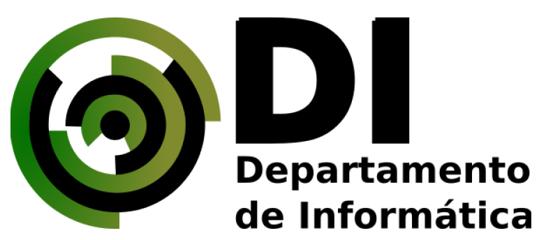

Organize seus horários com nosso sistema automatizado
Por meio de dois algoritmos (GRASP e Genetico) usamos de heuristicas aplicadas para trazer os melhores resultados na geração de horários para você

Por meio de dois algoritmos (GRASP e Genetico) usamos de heuristicas aplicadas para trazer os melhores resultados na geração de horários para você